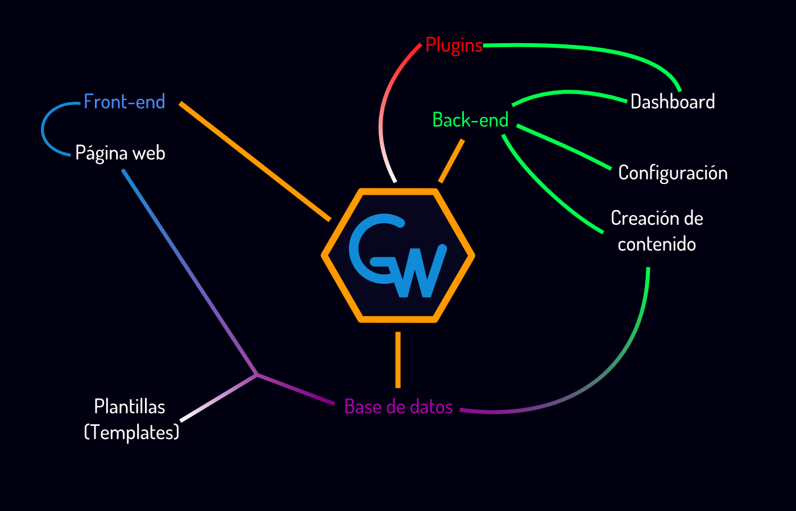

GRID WEAVER
Sistema de gestión de contenidos
Isaac Benjamin Espinosa Ramos
Metodología
Desarrollo por etapas
Plan Operativo
Especificación de requisitos
Especificación funcional
Diseño
Implementación
Integración
Validación y Verificación
Mantenimiento
Plan operativo
El objetivo del proyecto consiste en crear una CMS propia, siendo este el objetivo general a conseguir. Tomando en cuenta lo mencionado anteriormente, se pueden establecer los siguientes objetivos específicos:
Comprender la estructura de una CMS, los bloques que la componen y cómo interactúan entre ellos.
Aplicar el conocimiento obtenido en el diseño de la CMS propia
Crear una interfaz amigable con el usuario
Especificación de requisitos
Como requisitos del sistema quedan establecidos como los “bloques” que permitirán tener: front-end, back-end, opciones de configuración, capacidad de gestión y configuración de forma simple.
Especificación funcional y Diseño

Metodología
Desarrollo por etapas
Plan Operativo
Especificación de requisitos
Especificación funcional
Diseño
Implementación
Integración
Validación y Verificación
Mantenimiento